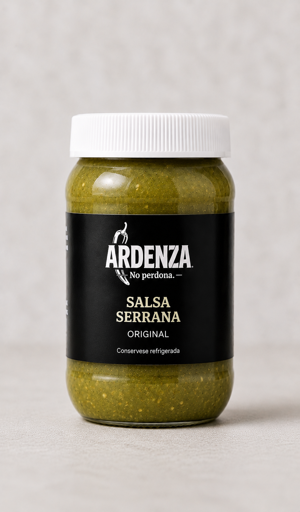
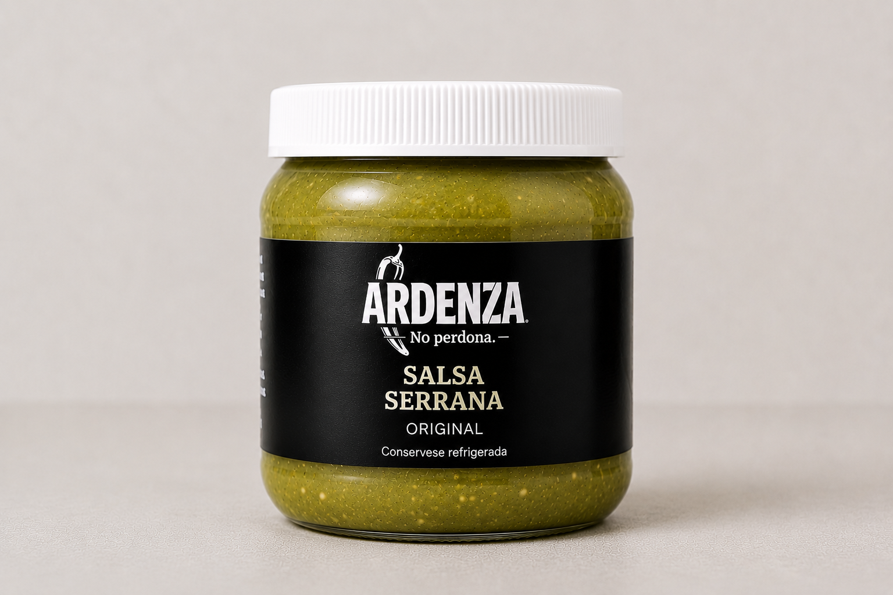

Casta - Monte

Una salsa artesanal creada para quienes buscan sabor auténtico y carácter en cada bocado. Fresca, intensa y con el equilibrio perfecto entre picante y sabor.
Hecha a base de: chile serrano y limón.
Picor:
🔥 🔥 🔥
- 500ml $200 MXN
- 250ml $130 MXN
- 125ml $90 MXN